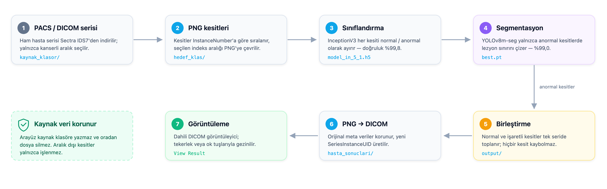
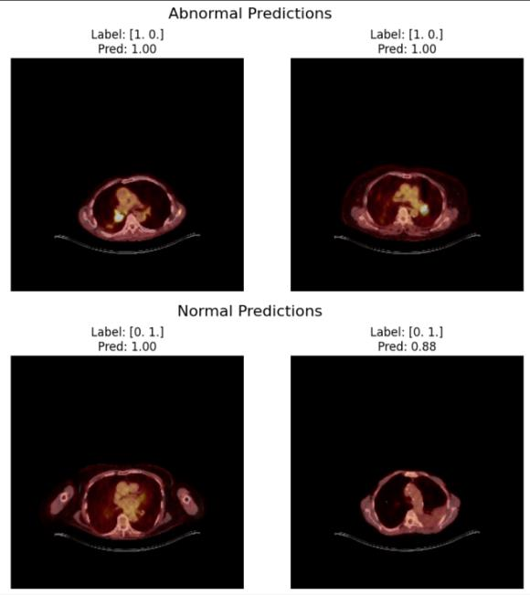
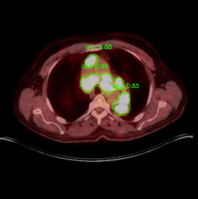
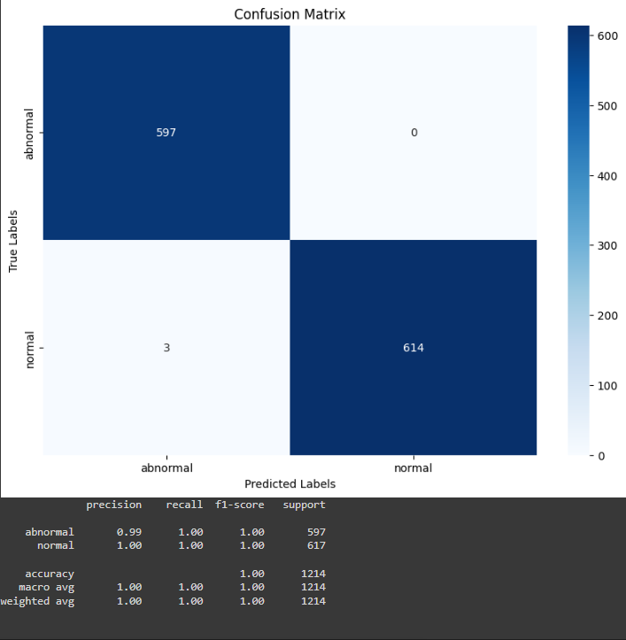
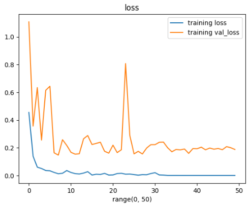
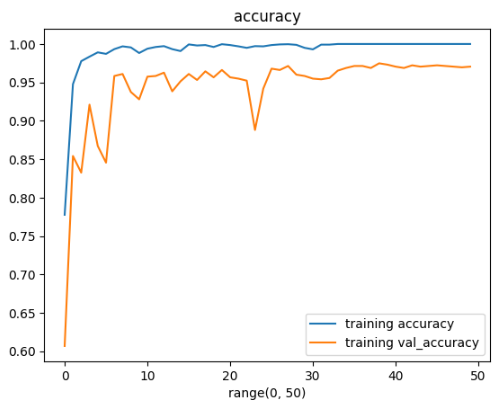
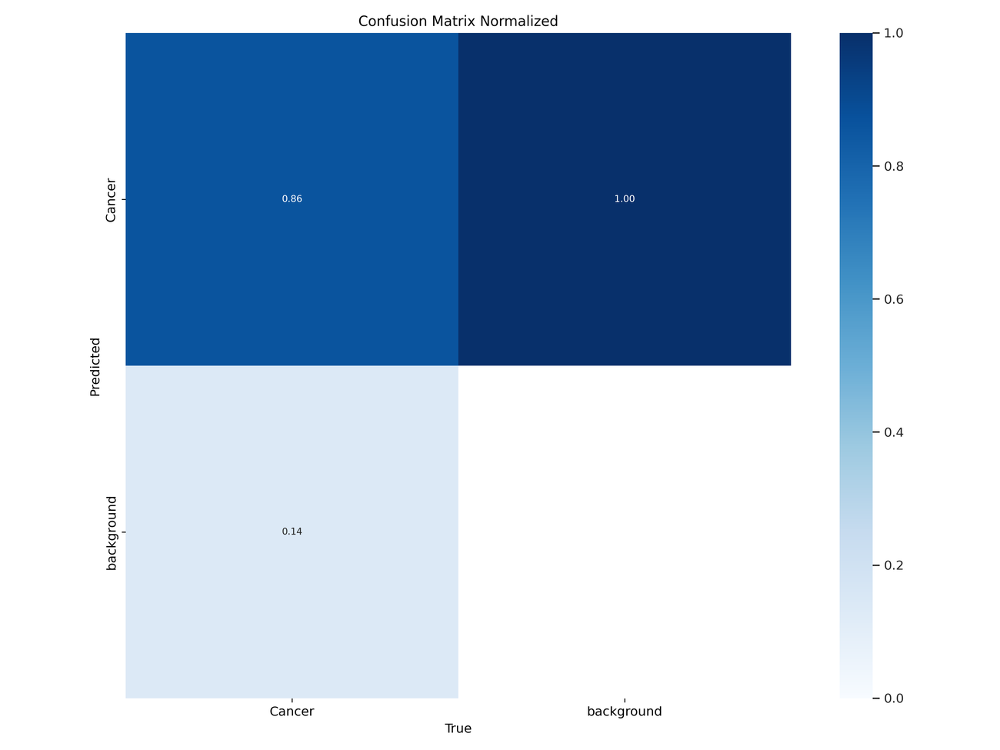
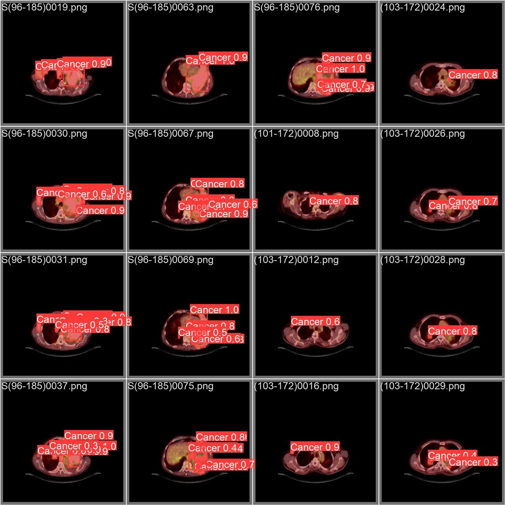
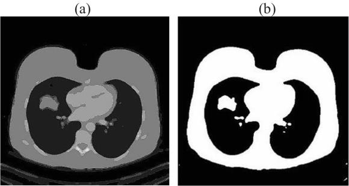
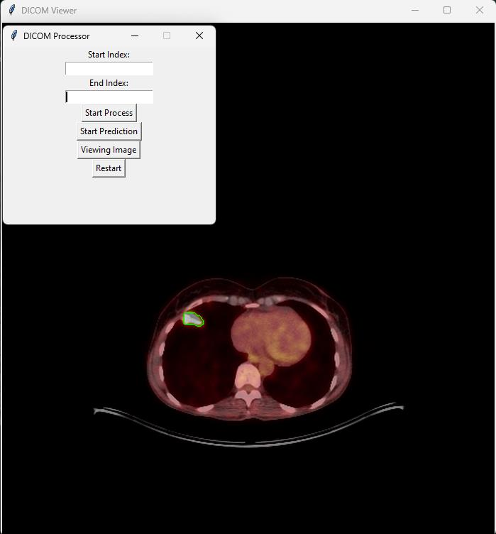

Akciğer PET/CT kesitlerinde
lezyon tespiti ve konturlama
LungScan, toraks PET/CT kesitlerini normal / anormal olarak sınıflandıran, anormal kesitlerdeki kanserli bölgeyi piksel düzeyinde segmente ederek işaretleyen ve sonucu tekrar DICOM formatında üreten uçtan uca bir derin öğrenme çalışma hattıdır.
01Çalışma hattı
Sistem iki aşamalıdır. Sınıflandırıcı, incelenecek kesit sayısını ciddi biçimde azaltır; segmentasyon modeli yalnızca anormal bulunan kesitlerde çalışarak lezyonun sınırını görünür hâle getirir.
Veri hazırlama
DICOM → PNG dönüşümü, kesitlerin InstanceNumber ile sıralanması, QuPath anotasyonlarının COCO JSON'dan YOLO poligon formatına çevrilmesi ve maskelerin üretilmesi.
Sınıflandırma
ImageNet ağırlıklarıyla başlatılan InceptionV3 modeli, kanserli ve sağlıklı kesitleri ayırt eder. Amaç, segmentasyon modeline yalnızca şüpheli kesitleri göndermektir.
Konturlama
YOLOv8m-seg, tek aşamada hem sınıfı hem maskeyi üretir. Lezyon sınırı, tanısal içeriği kapatmamak için yalnızca kontur olarak çizilir.
Görüntüleme
Sonuçlar orijinal DICOM meta verileriyle eşleştirilerek geri yazılır ve Tkinter tabanlı masaüstü arayüzde dilim dilim incelenir.
Projenin özgün akış şeması



02Sonuçlar
Nihai model YOLOv8m-seg: 100 epoch, imgsz=640,
batch=64, SGD (lr0=0.001), tek sınıf
(Cancer). Metrikler doğrulama kümesi üzerinde, Ultralytics'in
COCO değerlendirmesiyle hesaplanmıştır. Eğitim parametrelerinin tamamı
results/train_yolov8m_seg/args.yaml içindedir.
| Görev | Precision | Recall | mAP@50 | mAP@50-95 |
|---|---|---|---|---|
| Kutu (tespit) | 0,894 | 0,807 | 0,893 | 0,576 |
| Maske (segmentasyon) | 0,861 | 0,773 | 0,838 | 0,472 |

results/
klasöründedir.Sınıflandırma modeli (makale)





03Notebook'lar
Numaralandırma, veri hazırlamadan dağıtıma giden sırayı izler. ★ işaretli iki notebook, depodaki model ağırlıklarını üretir.
| # | Notebook | Yaklaşım | Not |
|---|---|---|---|
| 01 | 01_veri_hazirlama | — | DICOM → PNG, etiket → maske → YOLO etiketi, train/val ayrımı |
| 02 | 02_siniflandirma_vgg16 | VGG16 + tam bağlı başlık | 6 varyantın karşılaştırması |
| 03 | 03_siniflandirma_inceptionv3 | InceptionV3 + ince ayar | ★ Üretim sınıflandırıcısı (model_in_5_1.h5) |
| 04 | 04_degerlendirme_konfuzyon_matrisi | VGG16 @512² | Giriş boyutu ablasyonu ve karışıklık matrisi |
| 05 | 05_segmentasyon_unet | U-Net | Piksel düzeyinde segmentasyon, IoU / Dice |
| 06 | 06_segmentasyon_detectron2 | Mask R-CNN (Detectron2) | İki aşamalı tespit + segmentasyon |
| 07 | 07_segmentasyon_yolov8 | YOLOv8m-seg | ★ Üretim segmentasyonu (best.pt) |
| 08 | 08_cikarim_pipeline | — | Arayüzün Colab prototipi (uçtan uca hat) |
Denemeler
Üretimde kullanılmayan, karşılaştırma amacıyla tutulan çalışmalar
notebooks/denemeler/ altındadır:
Model boyutu karşılaştırması
n → n(50 epoch) → m → l → x sırasıyla beş YOLOv8 varyantı. Sonuç: yolov8m doğruluk/hız dengesi açısından en uygun seçimdir. yolov8l için kayıtlı değerler yolov8m ile birebir aynıydı (kopyalama hatası); bu satır bağımsız kanıt olarak değerlendirilmemelidir.
SVM öznitelik çıkarımı
VGG16 öznitelikleri + doğrusal SVM. Yöntem hattı halka açık bir veri kümesi (cats vs dogs) üzerinde denendi; sonuçlar akciğer verisiyle ilgili değildir.
Klasik görüntü işleme
Otsu eşikleme, parlak bölge işaretleme ve watershed. Hiçbiri lezyonu güvenilir biçimde ayırt edemedi; en önemli çıkarım, lezyonun yoğunlukla değil bağlamla tanımlandığıdır.

04Makale
Akciğer Kanser Tanılı Hastalarda Kanserli Doku Tespiti İçin Yapay Zeka Yöntemleri
Kullanılarak Kanserli Bölgenin Konturlanması
Doç. Dr. H. Feza Carlak, İhsan Bahadır Emekli — Akdeniz Üniversitesi,
Elektrik-Elektronik Mühendisliği Bölümü.
05Kurulum ve kullanım
Model ağırlıkları depo boyutunu şişirmemek için GitHub Releases üzerinden dağıtılır; veri kümesi hasta gizliliği nedeniyle paylaşılmaz.
1. Depoyu klonlayın
git clone https://github.com/bahadirmkl/LungScan-AI.git
cd LungScan-AI
python -m venv .venv && source .venv/bin/activate
pip install -r requirements.txtProje Python 3.10–3.11 ile geliştirilmiştir. Yalnızca notebook'ları inceleyecekseniz TensorFlow kurmak zorunda değilsiniz.
2. Model ağırlıklarını indirin
# v1.0.0 sürümündeki ağırlıklar
BASE=https://github.com/bahadirmkl/LungScan-AI/releases/download/v1.0.0
curl -L -o app/best.pt "$BASE/best.pt"
curl -L -o app/model_in_5_1.h5 "$BASE/model_in_5_1.h5"
Doğrulama: shasum -a 256 app/best.pt →
9ef3dfbc…742d2
3. Arayüzü çalıştırın
cd app
python lungscan_gui.py| Adım | Ne yapar |
|---|---|
| Start Process | DICOM serisini InstanceNumber sırasına dizer, verilen indeks aralığındaki kesitleri PNG'ye çevirir. |
| Start Prediction | Kesitleri sınıflandırır, anormal olanları segmente eder, sonuçları birleştirir ve DICOM'a geri dönüştürür. |
| View Result | Üretilen DICOM serisini dahili görüntüleyicide açar (fare tekerleğiyle dilimler arasında gezinilir). |
| Restart | Ara klasörleri temizleyerek başlangıç durumuna döner. |

Beklenen çalışma klasörü
<WORK_DIR>/
├── kaynak_klasor/ # ham DICOM serisi (girdi)
├── hedef_klas/ # DICOM → PNG çıktısı
├── normal/ # sınıflandırıcı: normal kesitler
├── abnormal/ # sınıflandırıcı: anormal kesitler
├── segmented/ # lezyon konturu çizilmiş kesitler
├── output/ # normal + segmented birleşimi
└── hasta_sonuclari/ # sonuç DICOM serisi (çıktı)06Gizlilik, etik ve sınırlamalar
Veri gizliliği
- Depoda hiçbir hasta verisi, DICOM dosyası veya kişisel sağlık bilgisi bulunmaz.
- Notebook çıktılarındaki örnek kesitler, PACS'ten anonimleştirilerek dışa aktarılmıştır.
- Model ağırlıkları ve veri kümesi ayrı tutulur.
- Makale PDF'lerinde hasta adı, protokol numarası veya yakılmış kimlik bilgisi yoktur.
Sınırlamalar
- Bölme düzeyi kesit bazlıdır; hasta düzeyinde değildir → metrikler iyimser.
- Tek sınıf: tüm lezyonlar Cancer başlığı altındadır; lezyon tipi ayrımı yoktur.
- Etiketler tek bir radyolog tarafından çizilmiştir; gözlemciler arası uyum ölçülmemiştir.
- Sınıflandırıcı ve segmentasyon modeli farklı veri kümelerinde eğitilmiştir; olasılık kalibrasyonu yapılmamıştır.